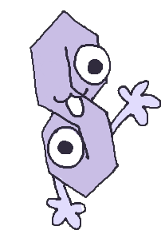
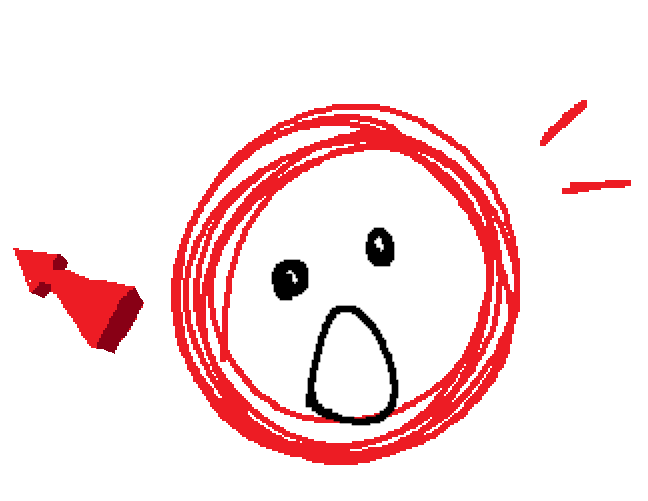

- Alias
- Cool S
- Species
- Algebralien
- Identity
- they/them, genderless
- Time in the Inbetween
- ~18 blooms
- Favorite food
- Pasta
- Favorite drink
- Water
- Hobbies
- People watching
- Favorite thing to do
- Follow Clickbaity around
- Favorite resident
- Clickbaity

- Alias
- Clickbaity
- Object
- Thumbnail click bait
- Identity
- he/him, male
- Time in the Inbetween
- ~20 blooms
- Favorite food
- Cheeto Puffs
- Favorite drink
- Monster energy
- Hobbies
- Browsing r/LSF, making dank memes
- Favorite thing to do
- Be a nuisance
- Favorite resident
- Cool S
There's no point in putting these two on separate biography pages, as they're always together in everything they do. Cool S is aloof, you could knock on their head and it would ring like a hollow bowl, but they're always smiling. Clickbaity tends to be loud and proud, running on caffeine and unfunny deep-fried photos in the back of his mind as he talks so much Cool S could never get a word in. Not that they have anything to say. They make the perfect pair.
Connections

Trivia
- Cool S is very good at video games.
- Clickbaity is very bad at them. Or maybe he just lets Cool S win.
- Their day usually depends on what Cool S wants to do. Some days, they have preferences and Clickbaity will do everything in his power to make it happen. Others, they'll just hang around Clickbaity all day.
- They float around like they own the place. Honestly, if you asked anybody, they might tell you that they do. They just have that kind of aura.